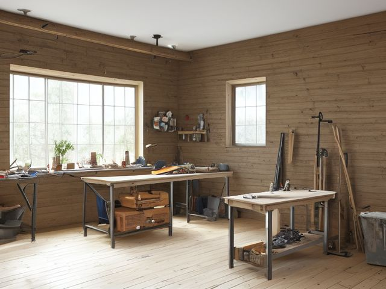

Workshop micro zone
The Main Workbench
The main workbench, in the Workshop. The one surface where a project actually gets built, cut, glued, and repaired. A bare bench top except the vise and the task lamp, one project tray holding the current job's parts, and a clear run of bench in front of the vise long enough to lay a board across. Every chisel and square back on its traced outline, the dog holes empty, and no offcuts or glue squeeze-out under the bench.
One session: 60-90 min, most of it in Sort, deciding what happens to the half-finished projects living on the bench.
The short version
- Sort. Clear the bench top and the shelf beneath it completely
- Straighten. Hang the tools your hand reaches for mid-cut, the marking knife, the combination square
- Shine. Vacuum the bench top and the dog holes rather than brushing them
- Safety. Check the vise jaws still bite a test piece without slipping
- Standardize. Trace the outlines on the tool wall in permanent marker
- Sustain. The last part of every session is the bench clear down, done
Each step in full, with what to have on hand and what done looks like, below.
Where it is
Workshop
6 micro zones, one session each
- 1The Main Workbench
- 2The Power Tool Storage
- 3The Fastener and Hardware Zone
- 4The Material Rack
- 5The Finishing and Chemical Zone
- 6The Safety and PPE Station
What done looks like
The one surface where a project actually gets built, cut, glued, and repaired.
- A bare bench top except the vise and the task lamp, one project tray holding the current job's parts, and a clear run of bench in front of the vise long enough to lay a board across
- Every chisel and square back on its traced outline, the dog holes empty, and no offcuts or glue squeeze-out under the bench
What done looks like
A bare bench top except the vise and the task lamp, one project tray holding the current job's parts, and a clear run of bench in front of the vise long enough to lay a board across. Every chisel and square back on its traced outline, the dog holes empty, and no offcuts or glue squeeze-out under the bench.

Check these before you start
- Fall, cut, or crushChisels and marking knives lying edge up in an open tray, and a vise whose jaws have worn smooth enough to release a workpiece mid-cut.
- Water and electricityThe task lamp or a tool cord running across the bench or down onto a damp concrete floor where you stand to work.
Which of these is true here?
Match what you are actually seeing in the main workbench to why it keeps happening, then start at the pass that fixes that, not the top of the list.
A half-assembled project has sat on the bench for months because the next step is one you are unsure how to do
- Nobody has been assigned to force a decision once a project stalls, so it just keeps occupying the bench indefinitely. Confirm in 30 seconds: Ask who resets this zone. If the honest answer is "whoever gets to it" or two names with no agreement, there is no owner. If that checks out, start at Sustain.
- The project has nowhere else to go once you set it down mid-build, so the bench became its only address. Confirm in 30 seconds: Ask where one specific item lives. If two people answer differently, or nobody answers, it has no home. If that checks out, start at Straighten.
- It has been up there so long that a half-built something on the bench no longer reads as unusual. Confirm in 30 seconds: Ask someone who does not live here to name what looks out of place. If they see it instantly and you had stopped noticing, this is the cause. If that checks out, start at Sort.
A chisel or marking knife is lying edge up in an open tray instead of on its traced outline on the tool wall
- It is what your hand finds first when you reach across the bench without looking, and that risk outranks tidying it between cuts. Confirm in 30 seconds: Look for the four: a blade your hand would meet, weight above shoulder height, heat beside something that burns, and an unsafe placement near a child's reach. If that checks out, start at Safety.
- Putting it back on the wall mid-cut means crossing the bench and losing your place in the work, so the tray catches it instead. Confirm in 30 seconds: Fetch it once and count the movements. More than two and the storage is charging you rent every time. If that checks out, start at Straighten.
- Two different people run this bench by two different unwritten rules about what counts as put away, so a tool ends up in the tray under one and on the wall under the other. Confirm in 30 seconds: Do the shared task together, once. The argument that starts is the conflict, and it is a design problem, not a character problem. If that checks out, start at Standardize.
The bench did not get its clear down before the shop light went off last night, and offcuts or glue squeeze-out are still on the bench this morning
- Two of you used the bench that evening and each assumed the other would do the ten minute clear down. Confirm in 30 seconds: Ask who resets this zone. If the honest answer is "whoever gets to it" or two names with no agreement, there is no owner. If that checks out, start at Sustain.
- The eye level photo is the standard, but nobody actually glances at it before switching the light off, so drift is not caught in the moment. Confirm in 30 seconds: Ask someone who does not live here to name what looks out of place. If they see it instantly and you had stopped noticing, this is the cause. If that checks out, start at Sort.
- Nothing marks the specific moment a fresh offcut earns its verdict, so it just sits on the bench until the whole session gets cleared. Confirm in 30 seconds: Name the moment it happens. If the answer is "when I get round to it", there is no trigger and it will not survive a bad week. If that checks out, start at Sustain.
Only have 15 minutes? Clear the bench top down to just the vise and the task lamp: put every hand tool back on its traced outline, and give any offcut or glue squeeze-out its verdict, the rack, the fire bucket, or the bin. Victory: The bench top holds only the vise and the task lamp, with every tool back on its silhouette and the dog holes empty.
The six passes, in order
Work them in this order. Sorting after you have arranged things means arranging things you were about to remove.
This zone's full kit list is below, after the method. Skim it first if you would rather gather everything before you start.
Sort
Decide what stays. Everything else leaves the zone now.
Clear the bench top and the shelf beneath it completely, then give every half-finished project a verdict: back on the bench with a date, or broken down into parts and stock. Snapped blades, glue bottles gone solid, and brackets you cannot identify leave now.
What to store it in, now that you know what you are keeping
Bins and shelves are for what Sort left behind, not a stand-in for it. Buying storage before sorting means buying a container for things you have not yet decided to keep.
Only if it applies to the main workbench: 5 more
Not every home needs these for the main workbench. Each one is here because some do, and the reason is next to it.
- Battery Charging Rack Organize tool batteries and chargers, in the Straighten, Standardize and Sustain passes. Do not overload; anchor wall-mounted or tall systems where required.
- Small Parts Drawer Cabinet Organize fasteners and hardware by type and size, in the Straighten, Standardize and Sustain passes. Do not overload; anchor wall-mounted or tall systems where required.
- Material Rack Store long project materials safely, in the Straighten, Standardize and Sustain passes. Do not overload; anchor wall-mounted or tall systems where required.
- Flammable Safety Cabinet Secure flammable finishes and solvents, in the Straighten, Standardize and Sustain passes. Do not overload; anchor wall-mounted or tall systems where required.
- PPE Wall Station Make protective equipment visible and ready, in the Straighten, Standardize and Sustain passes. Do not overload; anchor wall-mounted or tall systems where required.
Straighten
Give what stays a home, placed where the hand actually reaches.
Hang the tools your hand reaches for mid-cut, the marking knife, the combination square, the block plane, within arm's reach of the vise, and put everything you use once a project on the wall behind. Traced silhouettes mean a missing chisel shows up before you finish vacuuming.
Shine
Clean it, and use the cleaning to inspect what you cannot see when it is full.
Vacuum the bench top and the dog holes rather than brushing them out, then scrape dried glue drips off the surface before they telegraph into the next workpiece. Wipe the vise screw and give it a drop of oil.
Surface by surface, all 7 of them, with what to use on each.
Safety
Make the zone safe for everybody who uses it, including the shortest person.
Check the vise jaws still bite a test piece without slipping, and move the lamp cord so it does not lie across the part of the bench a handsaw crosses. A chisel lying edge up in an open tray is what your hand finds when you reach across the bench without looking.
Standardize
Write down the best way you know today, so it survives you forgetting.
Trace the outlines on the tool wall in permanent marker so a gap reads as a missing chisel, then take one photo of the cleared bench and tape it at eye level where you stand, because that photo is what bare means here.
Sustain
Attach the reset to something that already happens, so it keeps itself.
The last part of every session is the bench clear down, done before you take your safety glasses off, because once the glasses come off you are finished for the day and you know it. Ten minutes, by whoever was working. The photo taped at eye level settles what bare means, so slip is a comparison rather than a judgment, and occupied dog holes are the early version. This is the only large flat surface in a room full of things needing somewhere to go, so every other zone leans on it.
The kit this zone called for
Everything above assumed you had these already. Types of thing, not brands: anything you already own that does the job is the right one to use.
- Plastic scraper set Shine Plastic rather than steel so the bench top is not gouged; work flat to the surface.
- Impact-rated safety glasses Safety Use rated protection appropriate to task.
- Color-coded microfiber cloth set ×12 Shine Wash by use color; avoid fabric softener.
- Neutral pH multi-surface cleaner Shine, Sustain Verify surface compatibility; lock around children and pets.
- Compact vacuum with attachments Shine Use appropriate attachment.
- Keep, Relocate, Donate, Recycle, Trash container set ×5 Sort Do not block exits.
- Portable cleaning caddy Straighten, Shine, Sustain Secure chemicals from children and pets.
- Portable label maker Standardize, Sustain Follow surface and adhesive guidance.
- Removable write-on labels Standardize Test on delicate finishes.
Only if it applies to the main workbench: 2 more
- Surge Protector with Overload Protection Straighten, Safety Install and use according to product instructions.
- Water-resistant permanent labels Standardize, Sustain Avoid irreplaceable surfaces.
The project that has been on the bench since spring
You have a half-assembled something occupying your best surface, and you have not touched it in months because the next step is one you are unsure how to do. Here is the rule that settles it: say out loud what the next physical action is and what date this month you will do it. If you cannot name both in one breath, the project is finished. Take it apart, put the hardware back in the fastener drawers, put the stock back on the rack, and let the bench go back to being a bench. Keeping it assembled is not keeping the project alive, it is only keeping the surface unusable.
Cleaning it properly, surface by surface
Clean the bench to read it. Vacuum the top and the dog holes instead of brushing dust into the next joint, scrape the glue drips before they telegraph into a workpiece, and finish at the vise with a wipe and one drop of oil.
Work down, not across. Whatever comes off a high surface lands on the one below it, so cleaning the floor first means cleaning it twice.
Carry these in with you. Compact vacuum with attachments; Color-coded microfiber cloth set; Neutral pH multi-surface cleaner; Portable cleaning caddy; Plastic scraper or putty knife; Light machine oil; Floor-material-compatible cleaner.
- The tool wall or pegboard behind the bench
Start high and at the back. Brush the board and each hook downward, then run the vacuum crevice nozzle along the top of every tool outline where sawdust settles unseen, so it does not shower onto the bench the next time you knock the wall. - The task lamp, its head and arm
With the bulb cool, wipe the shade, the head, and the arm joints with a barely damp microfiber cloth, because dust drawn to a warm shade bakes on and dulls the light you cut by. Keep the cloth off the bulb and switch. - The vise, its screw and slide ways
Vacuum the grit out of the jaws and the slide ways, wind the vise fully open and closed to clear the screw, then wipe the screw clean and work one drop of light machine oil along the thread. - The bench top and its dog holes
Vacuum the whole top and suck the dog holes out with the crevice nozzle rather than brushing, which only moves the grit around. Then scrape dried glue drips and squeeze-out flat with a plastic scraper before they press into your next board, and wipe the sealed top with neutral pH cleaner on a damp cloth. - The bench apron and front edge
Wipe the front edge and apron with a cloth and neutral pH cleaner, where forearms rest and where the fine dust rolls off the top and clings. - The under-bench shelf and legs
Clear the offcuts and dropped hardware off the lower shelf, vacuum the shelf and around the leg feet, then wipe the shelf down with a damp cloth. - The floor in the standing zone
Vacuum the shavings and offcuts from the strip of floor you stand on, working them out from under the bench, then damp-wipe a sealed floor with the floor-material-compatible cleaner.
How to clean anything else in the house, surface by surface.
Inspect as you clean. Cleaning is the only time you see the zone empty, so use it.
- A wobble or a racking sway when you lean your weight on the bench, which points to a leg joint or a stretcher bolt working loose.
- The lamp cord or a tool flex with a cracked, stiff, or frayed section where it bends over the bench edge.
- Rust bloom on the vise screw, the bench dogs, or any bare steel fitting, a sign the shop is holding damp.
- A scorch mark or a heat-glazed patch on the top that says a tool or a workpiece has been running hot on this spot.
The standard that keeps it fixed
One project on the bench at a time, and the bench ends every session bare except the vise and the lamp.
Reset trigger. When you reach up to switch off the task lamp, the bench must already be clear, so the clear down happens before the light goes out.
The rest of the workshop
Each of these is one session on its own.
- The Main Workbench, you are here
- The Power Tool Storage
- The Fastener and Hardware Zone
- The Material Rack
- The Finishing and Chemical Zone
- The Safety and PPE Station
The Workshop in full, with what each of the 6 zones is for
The workshop as a deck of 68 cards: the frictions people report in each zone, the root cause behind each one, and the timed action that clears it. Free to read or print.
Zones that do the same job, elsewhere in the house
Different room, different name, same real job. Each one is its own page because the room around it changes what actually works.
Related reading
- Moving three things to get to the one you need?
- Does more than one person use this zone?
- Why the standard above names one home per category
- This zone's safety pass, in full
- Why this zone gets messy again
Questions people ask about this zone
- How long does it take to reset the main workbench?
- One session: 60-90 min, most of it in Sort, deciding what happens to the half-finished projects living on the bench.
- What does a finished main workbench look like?
- A bare bench top except the vise and the task lamp, one project tray holding the current job's parts, and a clear run of bench in front of the vise long enough to lay a board across. Every chisel and square back on its traced outline, the dog holes empty, and no offcuts or glue squeeze-out under the bench.
- What is the hardest call to make in the main workbench?
- You have a half-assembled something occupying your best surface, and you have not touched it in months because the next step is one you are unsure how to do. Here is the rule that settles it: say out loud what the next physical action is and what date this month you will do it. If you cannot name both in one breath, the project is finished. Take it apart, put the hardware back in the fastener drawers, put the stock back on the rack, and let the bench go back to being a bench. Keeping it assembled is not keeping the project alive, it is only keeping the surface unusable.
- How do you keep the main workbench from getting cluttered again?
- One project on the bench at a time, and the bench ends every session bare except the vise and the lamp. When you reach up to switch off the task lamp, the bench must already be clear, so the clear down happens before the light goes out.
- What do you need to clean the main workbench?
- Compact vacuum with attachments; Color-coded microfiber cloth set; Neutral pH multi-surface cleaner; Portable cleaning caddy; Plastic scraper or putty knife; Light machine oil; Floor-material-compatible cleaner.
- What do you clean first in the main workbench?
- The tool wall or pegboard behind the bench. Start high and at the back. Brush the board and each hook downward, then run the vacuum crevice nozzle along the top of every tool outline where sawdust settles unseen, so it does not shower onto the bench the next time you knock the wall.
- Is there a fall, cut, or crush risk in the main workbench?
- Chisels and marking knives lying edge up in an open tray, and a vise whose jaws have worn smooth enough to release a workpiece mid-cut.
- Is there a water and electricity risk in the main workbench?
- The task lamp or a tool cord running across the bench or down onto a damp concrete floor where you stand to work.
- Why does the main workbench do this: A half-assembled project has sat on the bench for months because the next step is one you are unsure how to do?
- Nobody has been assigned to force a decision once a project stalls, so it just keeps occupying the bench indefinitely, so start at Sustain; The project has nowhere else to go once you set it down mid-build, so the bench became its only address, so start at Straighten; It has been up there so long that a half-built something on the bench no longer reads as unusual, so start at Sort.
- Why does the main workbench do this: A chisel or marking knife is lying edge up in an open tray instead of on its traced outline on the tool wall?
- It is what your hand finds first when you reach across the bench without looking, and that risk outranks tidying it between cuts, so start at Safety; Putting it back on the wall mid-cut means crossing the bench and losing your place in the work, so the tray catches it instead, so start at Straighten; Two different people run this bench by two different unwritten rules about what counts as put away, so a tool ends up in the tray under one and on the wall under the other, so start at Standardize.
- Why does the main workbench do this: The bench did not get its clear down before the shop light went off last night, and offcuts or glue squeeze-out are still on the bench this morning?
- Two of you used the bench that evening and each assumed the other would do the ten minute clear down, so start at Sustain; The eye level photo is the standard, but nobody actually glances at it before switching the light off, so drift is not caught in the moment, so start at Sort; Nothing marks the specific moment a fresh offcut earns its verdict, so it just sits on the bench until the whole session gets cleared, so start at Sustain.
When you want it off the screen
Carry The Main Workbench into the room
The method above is complete and free. The Whole House Print Pack puts The Main Workbench and the other 113 micro zones on 684 printable cards, so the steps you just read are not stuck behind a phone screen while your hands are full.
The Print Pack, 19 dollarsJust this zone, 4 dollarsOr draw a card free
The Main Workbench on its own is 4 dollars for 6 cards. All 114 micro zones is 19 dollars for 684. The whole house is the better buy; the single zone is here so you can take only what you are working on.
If The Main Workbench keeps fighting back, the real problem usually sits somewhere else in the room. A one hour virtual consult is 250 dollars: we find the function, the friction and the root cause together, and you keep a written standard for the space.
See what a consult covers, 250 dollars
Not ready to pay for that either? Ask which zone first, free